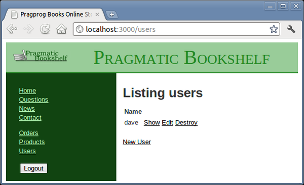

Let’s start with adding links to various administration functions to the sidebar in the layout and have them show up only if there is :user_id in the session:
| rails31/depot_r/app/views/layouts/application.html.erb | |
<!DOCTYPE html> |
|
<html> |
|
<head> |
|
<title>Pragprog Books Online Store</title> |
|
<%= stylesheet_link_tag "application" %> |
|
<%= javascript_include_tag "application" %> |
|
<%= csrf_meta_tag %> |
|
</head> |
|
<body class="<%= controller.controller_name %>" > |
|
<div id="banner" > |
|
<%= image_tag("logo.png") %> |
|
<%= @page_title || "Pragmatic Bookshelf" %> |
|
</div> |
|
<div id="columns" > |
|
<div id="side" > |
|
<% if @cart %> |
|
<%= hidden_div_if(@cart.line_items.empty?, id: 'cart') do %> |
|
<%= render @cart %> |
|
<% end %> |
|
<% end %> |
|
<ul> |
|
<li> <a href="http://www...." >Home</a> </li> |
|
<li> <a href="http://www..../faq" >Questions</a> </li> |
|
<li> <a href="http://www..../news" >News</a> </li> |
|
<li> <a href="http://www..../contact" >Contact</a> </li> |
|
</ul> |
|
| * | |
| * | <% if session[:user_id] %> |
| * | <ul> |
| * | <li><%= link_to 'Orders', orders_path %></li> |
| * | <li><%= link_to 'Products', products_path %></li> |
| * | <li><%= link_to 'Users', users_path %></li> |
| * | </ul> |
| * | <%= button_to 'Logout', logout_path, method: :delete %> |
| * | <% end %> |
</div> |
|
<div id="main" > |
|
<%= yield %> |
|
</div> |
|
</div> |
|
</body> |
|
</html> |
|
Now it is all starting to come together. We can log in, and by clicking a link on the sidebar, we can see a list of users. Let’s see whether we can break something.
|  |
|
Figure 30. Listing our users |
We bring up the user list screen that looks something like Figure 30, Listing our users; then we click the Destroy link next to dave to delete that user. Sure enough, our user is removed. But to our surprise, we’re then presented with the login screen instead. We just deleted the only administrative user from the system. When the next request came in, the authentication failed, so the application refused to let us in. We have to log in again before using any administrative functions.
But now we have an embarrassing problem: there are no administrative users in the database, so we can’t log in.
Fortunately, we can quickly add a user to the database from the command line. If you invoke the command rails console, Rails invokes Ruby’s irb utility, but it does so in the context of your Rails application. That means you can interact with your application’s code by typing Ruby statements and looking at the values they return.
We can use this to invoke our user model directly, having it add a user into the database for us:
depot> rails console |
|
Loading development environment. |
|
>> User.create(name: 'dave', password: 'secret', |
|
password_confirmation: 'secret') |
|
=> #<User:0x2933060 @attributes={...} ... > |
|
>> User.count |
|
=> 1 |
The >> sequences are prompts. After the first, we call the User class to create a new user, and after the second, we call it again to show that we do indeed have a single user in our database. After each command we enter, rails console displays the value returned by the code (in the first case, it’s the model object, and in the second case, it’s the count).
Panic over. We can now log back in to the application. But how can we stop this from happening again? There are several ways. For example, we could write code that prevents you from deleting your own user. That doesn’t quite work—in theory, A could delete B at just the same time that B deletes A. Instead, let’s try a different approach. We’ll delete the user inside a database transaction. If after we’ve deleted the user there are then no users left in the database, we’ll roll the transaction back, restoring the user we just deleted.
To do this, we’ll use an Active Record hook method. We’ve already seen one of these: the validate hook is called by Active Record to validate an object’s state. It turns out that Active Record defines twenty or so hook methods, each called at a particular point in an object’s life cycle. We’ll use the after_destroy hook, which is called after the SQL delete is executed. If a method by this name is publicly visible, it will conveniently be called in the same transaction as the delete, so if it raises an exception, the transaction will be rolled back. The hook method looks like this:
| rails31/depot_s/app/models/user.rb | |
after_destroy :ensure_an_admin_remains |
|
private |
|
def ensure_an_admin_remains |
|
if User.count.zero? |
|
raise "Can't delete last user" |
|
end |
|
end |
|
The key concept here is the use of an exception to indicate an error when deleting the user. This exception serves two purposes. First, because it is raised inside a transaction, it causes an automatic rollback. By raising the exception if the users table is empty after the deletion, we undo the delete and restore that last user.
Second, the exception signals the error back to the controller, where we use a begin/end block to handle it and report the error to the user in the flash. If you want only to abort the transaction but not otherwise signal an exception, raise an ActiveRecord::Rollback exception instead, because this is the only exception that won’t be passed on by ActiveRecord::Base.transaction.
| rails31/depot_s/app/controllers/users_controller.rb | |
def destroy |
|
@user = User.find(params[:id]) |
|
| * | begin |
| * | @user.destroy |
| * | flash[:notice] = "User #{@user.name} deleted" |
| * | rescue Exception => e |
| * | flash[:notice] = e.message |
| * | end |
respond_to do |format| |
|
format.html { redirect_to users_url } |
|
format.json { head :ok } |
|
end |
|
This code still has a potential timing issue—it is still possible for two administrators each to delete the last two users if their timing is right. Fixing this would require more database wizardry than we have space for here.
In fact, the login system described in this chapter is rather rudimentary. Most applications these days use a plugin to do this. A number of plugins are available that provide ready-made solutions that not only are more comprehensive than the authentication logic shown here but generally require less code and effort on your part to use. See Section 26.3, Finding More at RailsPlugins.org for a couple of examples.